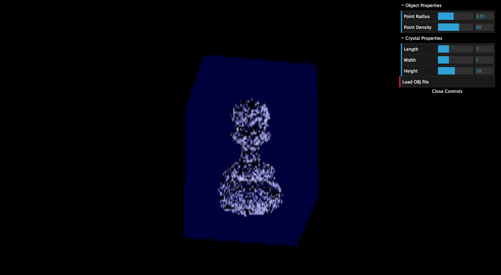
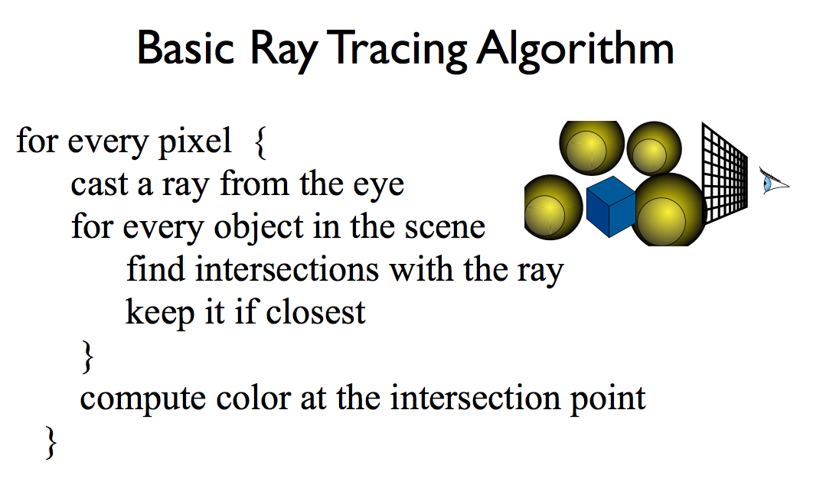
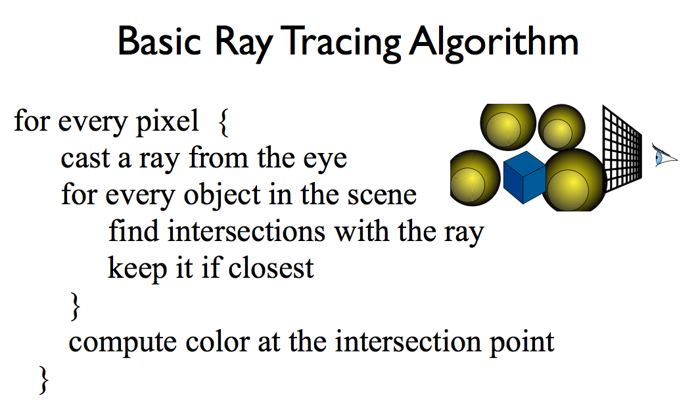
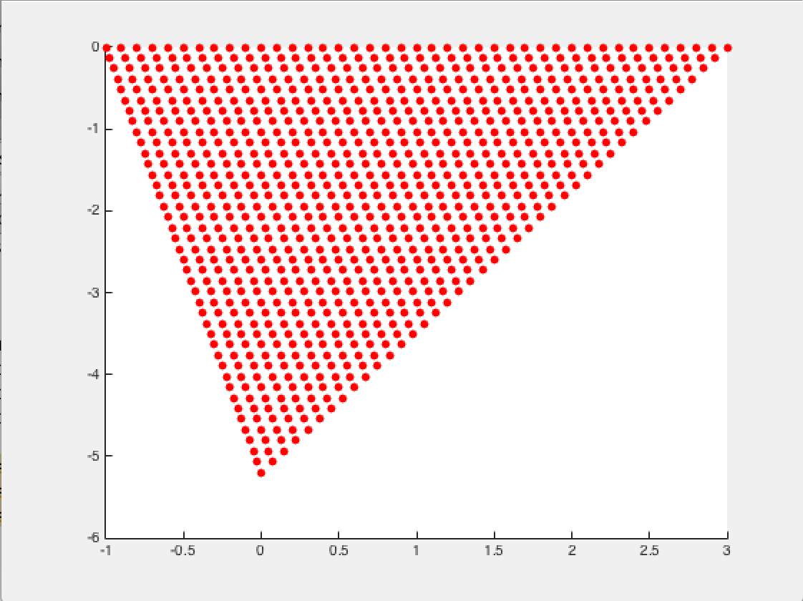

Abstract
 URLLaser Etch is a popular and quick technology now. It is used in creating customized beautiful gifts. Therefore, a perfect simulation can not only give the customers a basic idea about how the final product will look like, but also promote the buying willingness of customers. Our project focuses on creating a useful tool to perfectly simulate a 3D Laser Etch product. This tool will allow users to upload their desired 3D model and get its crystal laser etch simulation. In this project, we can learn how to transfer a triangle mesh 3D model into a point cloud and the ray-tracing caculation within a crystal material with an object inside.
Background and Introduction
In computer graphics, ray tracing is a technique for generating an image by tracing the path of light through pixels in an image plane and simulating the effects of its encounters with virtual objects. The technique is capable of producing a very high degree of visual realism, usually higher than that of typical scanline rendering methods, but at a greater computational cost. This makes ray tracing best suited for applications where the image can be rendered slowly ahead of time, such as in still images and film and television visual effects, and more poorly suited for real-time applications like video games where speed is critical. Ray tracing is capable of simulating a wide variety of optical effects, such as reflection and refraction, scattering, and dispersion phenomena (such as chromatic aberration)

Algorithm and Method
1. implement basic ray tracing
 

2. simulate point cloud in matlab
3. transform object to point cloud
First, the triangle mesh 3D model will be decomposed into very fine geometry and be regarded as a point cloud. We will refer to inflating balloon model algorithm in this part [f]. Second, this point cloud will be enclosed in a cube or any polyhedral created by WebGL library,which will become the crystal part. Third, the ray-tracing will be involved to render the whole object. In our project, we want to present a realistic rendering for our models, which combines the shading properties of reflection and refraction in the real world. Therefore, we will first calculate the shading coefficients of all the objects in the scene. Then, we cast rays through each pixel and test the intersection with some subset of all the objects in the scene. Once the ray hits the nearest object, we examine the material property of the object to decide whether to perform further shading algorithm. Reflection and refraction algorithm will be exploited if necessary. In the end, the control panel, animation, and ambient light may be included.
Result
Contact
Team
Chieh-I Chen (chiehich@usc.edu)
Yudong Yang (yudongya@usc.edu)
Chong Li (chongli@usc.edu)
Yawei Huang (yaweihua@usc.edu)